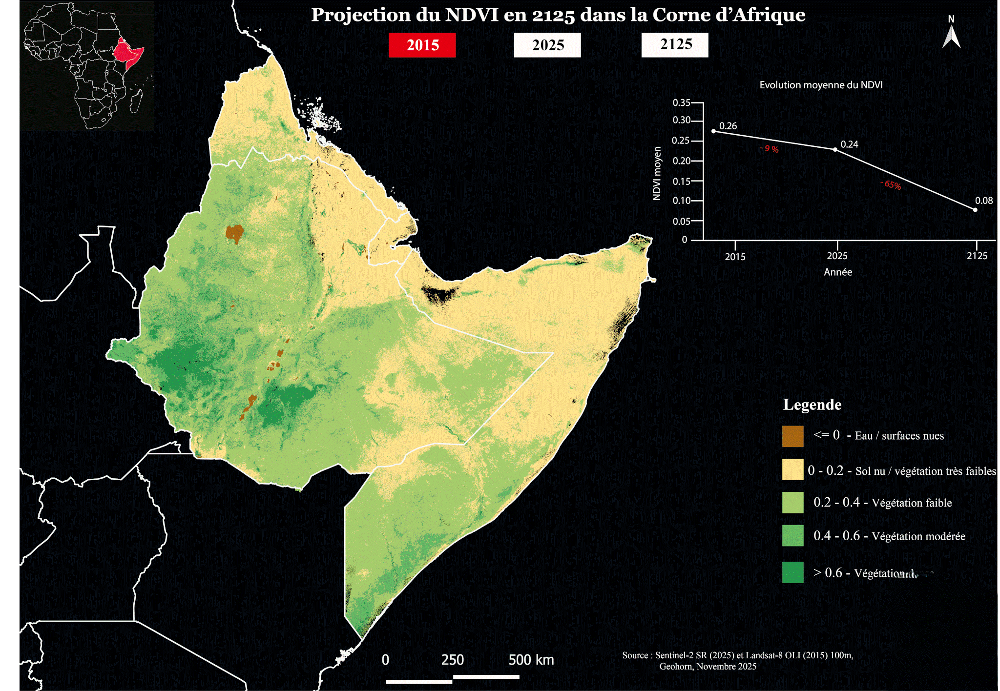
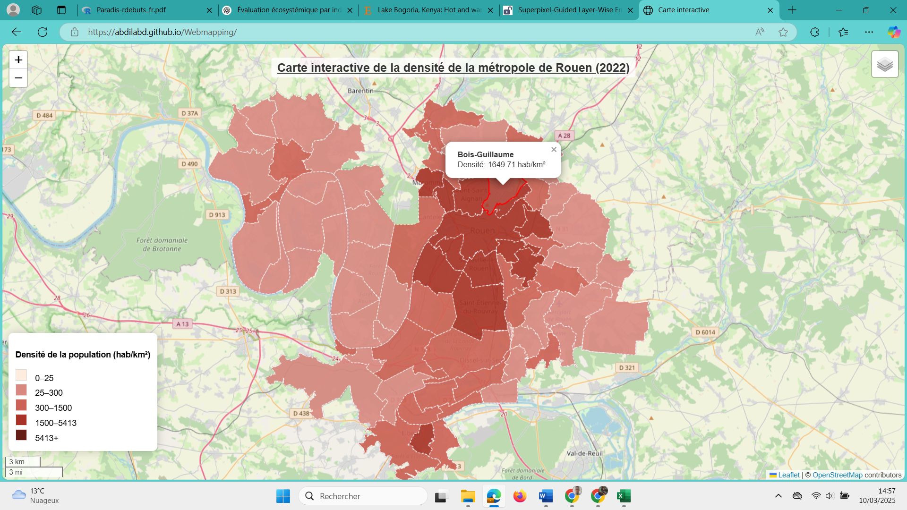
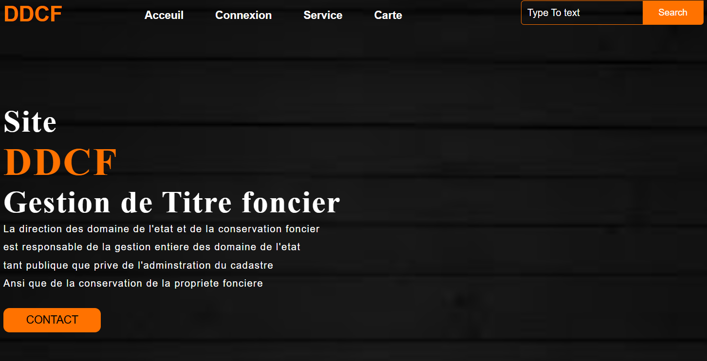
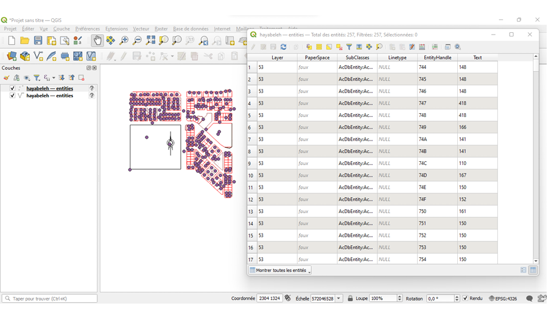
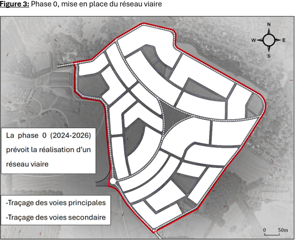
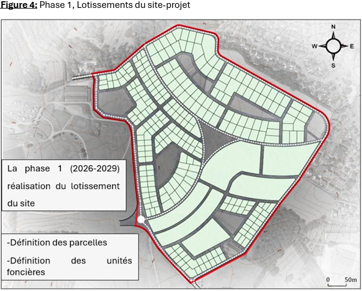

01↓
Collecter
Acquisition et centralisation de données issues du terrain, de l’open data, d’images satellitaires, de fichiers métiers ou de services web.
Terrain · Open data · API · SatelliteDisponible pour de nouvelles collaborations
Géomaticien et analyste géospatial, je conçois des chaînes de traitement, des bases de données spatiales, des analyses et des productions cartographiques afin de mieux comprendre les territoires, leurs infrastructures et leurs dynamiques environnementales.

01 — APPROCHE
J’interviens sur l’ensemble du cycle de vie des données géographiques afin de garantir des informations fiables, cohérentes et adaptées aux besoins d’analyse et de représentation.
Acquisition et centralisation de données issues du terrain, de l’open data, d’images satellitaires, de fichiers métiers ou de services web.
Terrain · Open data · API · SatelliteVérification de la qualité, de la complétude et de la cohérence. Identification des doublons, erreurs et valeurs manquantes.
Qualité · Cohérence · NettoyageUniformisation des formats et des structures attributaires. Reprojection et conversion des données pour assurer leur compatibilité.
Formats · Attributs · SCR · ReprojectionInsertion, organisation et mise à jour des données dans des bases de données spatiales.
PostgreSQL · PostGIS · SQLCroisement des sources et analyses spatiales, statistiques ou temporelles pour produire des indicateurs pertinents.
QGIS · ArcGIS · Python · RConception de cartes statiques, tableaux de bord et applications Web SIG interactives pour valoriser les résultats.
Cartographie · Leaflet · Lizmap · Shiny02 — COMPÉTENCES
Structuration, intégration, mise à jour et interrogation de données spatiales issues de sources multiples.
Croisement des données, calcul d’indicateurs et étude des répartitions, relations et évolutions spatiales.
Conception de représentations claires et adaptées au public, du document cartographique à la visualisation de données.
Exploitation d’images satellitaires pour caractériser l’occupation du sol et suivre les dynamiques environnementales.
Développement d’outils interactifs et de traitements reproductibles pour faciliter l’accès et l’exploitation des données.
03 — RÉALISATIONS
Cartographie, applications Web SIG et projets : trois façons de mettre les données géographiques en action.






CATALOGUE
Visualisation interactive de la densité de population en 2022 et des contrastes territoriaux.
Voir la réalisation ↗Productions thématiques répondant à différents enjeux territoriaux et environnementaux.
Exploration des changements d’occupation des sols dans le Beauvaisis entre 2006 et 2012.
Centralisation des propriétés foncières, des plans et de leurs informations dans une base spatiale.
Prototype numérique exploitant l’open data du patrimoine et du tourisme normand.
Voir la réalisation ↗Proposition territoriale fondée sur les documents urbains et les principes du développement durable.
Aucune réalisation ne correspond à votre recherche.
04 — EXPÉRIENCES
INTERACT — UniLaSalle · Beauvais
GeoHorn · Beauvais
INTERACT — UniLaSalle · Beauvais
Direction des Domaines et de la Conservation Foncière · Djibouti
Office National de l’Eau et de l’Assainissement de Djibouti
05 — CONTACT